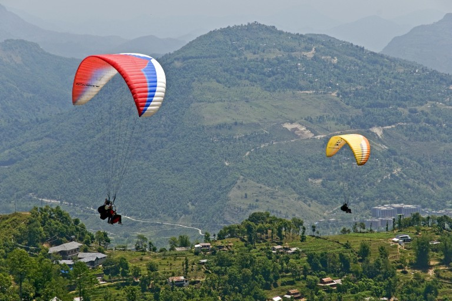
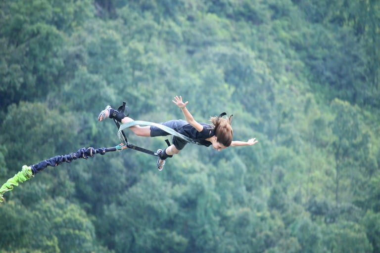
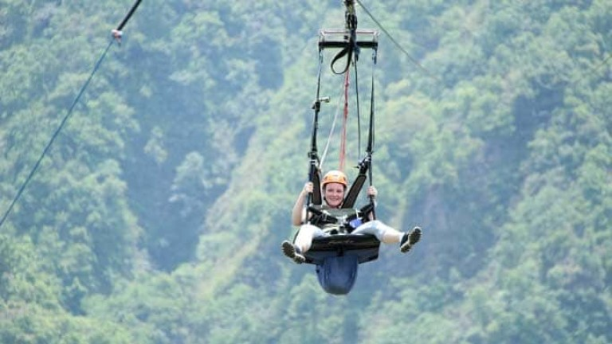
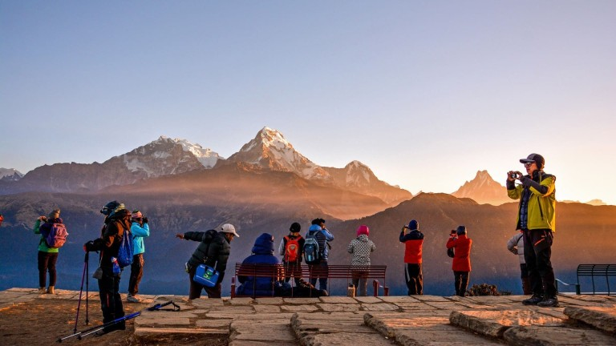
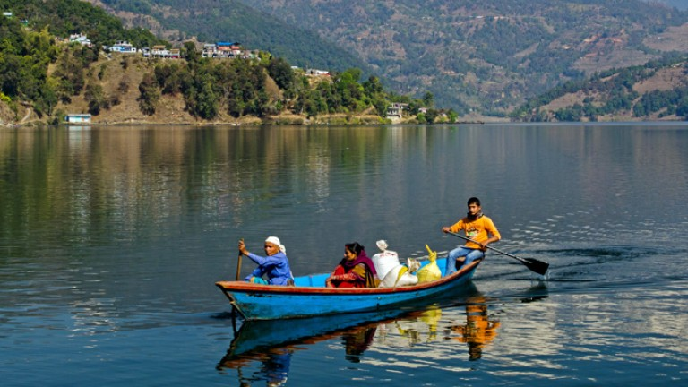
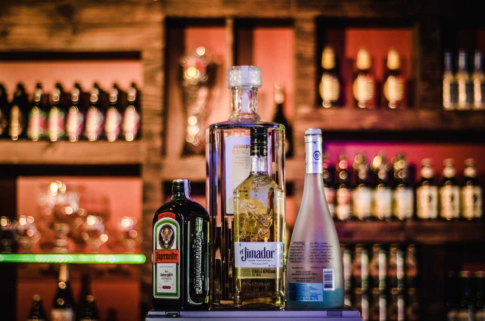
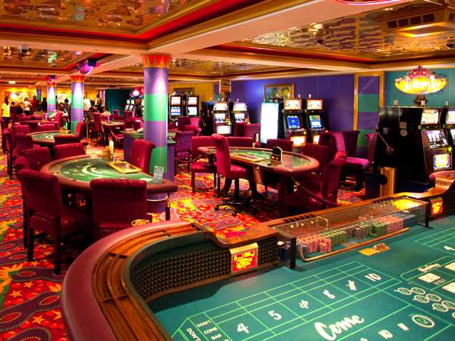
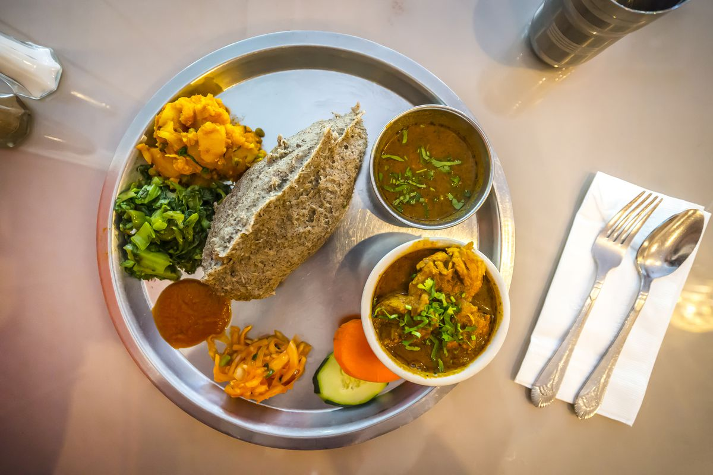
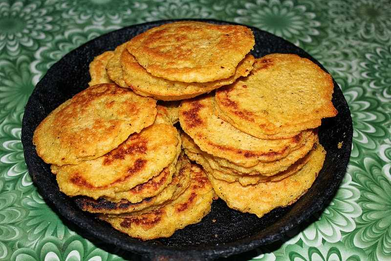
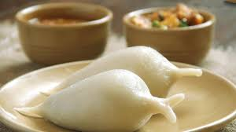

Jobs fill your pocket, but adventures fill your soul.
Inspired by | Jamie Lyn Beatty
Pokhara
Places to Explore In Pokhra
Phewa Lake
Pokhara owes much its popularity to the enchanting fresh-water Cluster of 9 Lakes which include the popular Phewa, Begnas, Rupa, Khaste, Dipang, Maidi, Gunde, Neurani, Kamalpokhari and Pokhara Seti Catchment, lakes. The lakes give Pokhara its name and also play a vital role in sustaining the biodiversity, ecosystem and the local livelihood Tal Barahi Temple, located at the center of Phewa Lake, is the most important religious monument of Pokhara.This two-storied pagoda is believed to be dedicated to one of the Hindu gods known as Vishnu. It usually gets crowded on Saturdays.
Sarangkot
The Ward is located on Sarangkot, a hill on the western side of Pokhara with an altitude of 1600m. Sarangkot is known for its panoramic Himalayan views of Dhaulagiri, Annapurna and Manaslu. It also provides an expansive view of the city of Pokhara, from the extreme north to the south including Phewa Lake. Tourists drive up the hill to watch the sunrise from the view tower at the top. In recent years, Sarangkot has been called one of the best paragliding locations in the world. The hike up from the Pokhara Baglung highway at Miruwa to Sarangkot takes 90 minutes to 1.5hours
Jhula Bridge
Kushma is a municipality and the headquarters of Parvat District which lies in the Western part of Nepal just about 57 km from Pokhara and 262 Kilometers off from Kathmandu.. The place is famous for catenary suspension footbridge, which is one of the world’s highest of it’s type. And it was opened in early 2010. Now, the newly built Bungee and Swing has got attention among the internal as well as international tourists. And it is the highest bungee and swing in Nepal and second highest in the world.
Shanti-Stupa
The Shanti stupa (1115m) in Pokhara, also known as the World Peace Pagoda, is a must-see popular tourist destination in the beautiful Pokhara city. Nichidatsu Fujii and villagers built it in 1947 as a monument of international peace. After meeting Mahatma Gandhi in 1931, he was impressed by Gandhi’s nonviolent methods for achieving great goals.. The Shanti Stupa is situated in the front of Lakeside, Pokhara’s most popular tourist destination, on a mountaintop overlooking Fewa Lake.The Shanti stupa became Nepal’s initial and the first peace pagoda. The pagoda stands 115 feet (35 meters) tall and has a diameter of 344 feet (105 meters).
Things to Do
Paraglading
Banji jumping
zippling
Hikking
Boating
Sky Driving

Night Life
Night Marketing
Pokhara is the place to be when it comes to nightlife in Nepal. It is one of the liveliest locations in the
world to party, as the city offers several pubs and clubs to guarantee that both residents and visitors have a
good time. Most travellers know Pokhara is the place to be in Nepal.
It offers the finest nature and
nightlife; a night spent here promises revelry. Read on further to learn more about Pokhara nightlife.Pokhara
is the place to be when it comes to nightlife in Nepal.
Pokhara is a popular tourist destination in
Nepal- a peaceful countryside and an adventure zone, with beautiful lakes and Himalayan landscapes. If you are
done with trailing the mountains or taking a boat ride on the serene lakes and looking forward to trying your
luck in gambling in Pokhara, there are only a few options for you, as gambling of any kind is considered
illegal in Nepal. It is one of the liveliest locations in the world to party, as the city offers several pubs
and clubs to guarantee that both residents and visitors have a good time. Most travellers know Pokhara is the
place to be in Nepal
Bar In Pokhra
Pokhara in Nepal is far from being the most happening place in the world, but that doesn’t mean in any way that you can’t enjoy your night stay in this picturesque, laid-back small town in the lap of the lofty snow-covered Himalayas. Even amateur travelers know the place to be in when in Nepal; Pokhara. Pokhara provides you with the combination of nature and nightlife at their best and a night spent here is a night well spent. Nightlife in Pokharaattains its pinnacleeachtime from Christmas to New Year. Street food festival is prearrangedfor these days. Streets alwaysremain flooded with light. Lakeside or Baidamproffersmost excellent nightlife in Pokhara as it is huddled with the guest houses, best hotels, pubs, bars, dance clubs and restaurants in Pokhara.Lakeside area holds the largest numbers of public houses in Pokhara. Sky LoungeCafe, Old Blue’s Bar, Bar and Grill, Busy Bee Cafe, Laila’s Bar, Club Amsterdam Cafe and Bar, Club Paradiso, Ibiza Dance Restaurant, Cafe Concerto, Blue Lagoon, Bullet Base Camp, All That Jazz, Nasha Club and are Firefly Bar the list of nightclubs in Pokhara. Along with nightclubs and night bars, there are also exquisite dance clubs in Pokhara which cordiallygreeteven the foreigners
Casino In Pokhra
Pokhara is a popular tourist destination in Nepal- a peaceful countryside and an adventure zone, with beautiful lakes and Himalayan landscapes. If you are done with trailing the mountains or taking a boat ride on the serene lakes and looking forward to trying your luck in gambling in Pokhara, there are only a few options for you, as gambling of any kind is considered illegal in Nepal. Nepal has everything- from snow clad Himalayas, holy Hindu temples to a quiet, rustic vacation. You can set off on the trail of Himalayas, or plunge into the serene lakes. However, if you want to try your luck at a game of chance, you will not be disappointed. Kathmandu, the capital city of Nepal, has many exciting casinos to offer to its tourists. The best thing is that these casinos are open on all days of the week for 24 hours! Time is definitely not a constraint here, and you can make as much quick money as you want. What's your taste? Blackjack, poker or roulette? Whatever it is, you can always flaunt your skills at the casinos in Kathmandu. These high-end casinos have amazing packages to lure customers along with the free flow of drinks and much more. And there have been many tourists who have won handsome amounts. So, be the next one to follow up and return home as a millionaire.
Special Street Food
Didoo
Dhindo is a meal prepared in Nepal. It is prepared by gradually adding flour to boiling water while stirring. It is a staple meal in various parts of Nepal, specially Tamangs in the Hilly Region of Nepal [1] and the Sikkim and Darjeeling regions of India. Though it is a staple food in Nepal, dhindo has previously been seen as an inferior food compared to rice, and was associated with low status.[2] The inclusion of dhindo on urban restaurant menus has coincided with a rise in the food's prestige,[3] possibly attributable to the changing perception of Nepal's indigenous crops, which are now recognized for their nutritional advantage.Dhindo is Optionally, chopped mutton can be added to the dhindo, or small pieces or powder of soft chhurpi.
Sel Roti

A fusion of doughnut and bagel, Sel Roti is one of the most sought after snack in Nepal during festivals like Tihar and Dashain. It is a circular rice flour bread which is deeply fried to make it crunchy on the outside and soft on the inside. It is crispy and sweet and tastes best with yoghurt or veggies. Being a popular festival food in Nepal, this dish is a must on your culinary bucket list. It is made of rice flour with added flavours. A batter is prepared by adding water, sugar, and ghee to roughly grinded rice flour. The ghee can also be substituted by cooking oil or butter.. Once the batter is set, it is deep fried in cooking oil or ghee. Instead of water, milk can also be used to prepare the batter. However, using milk can reduce the shelf life of the dish. A woman cooking sel roti in a traditional Nepalese wooden stove A woman cooking sel roti in a traditional.
Wo or Bara
Wo is a kind of pancakes made by the Newari people of Nepal. The Newaris are an indigenous group of locals in the Kathmandu valley. Wo is made with ground lentil (green or black) batter during the 'Sithi Nakha', a Newari festival. These Dal patties are light and perfect for snacks. For non-vegetarians, Bara can also be added with minced chicken and battered egg.Lentils are a staple in my pantry for many reasons and I am happy to add a new lentil-based recipe to my repertoire as it can be enjoyed as a quick meal or an appetizer. Lentil Pancake {Newari Bara, Wo:} is made with split black lentils with skin on, however I had split black lentils without the skin in my pantry so I used that kind. If you use split black lentils with skin, make sure to separate the skin and discard it otherwise, your final pancake won’t turn out correctly.
Yomari
Yomari are a steamed sweet rice-dumpling snack made by the Newari ethnic community, mainly associated with a festival in December held in their honor, Yomari Punhi. During this festival, which marks the end of the rice harvest, women make the fluffy dumplings that (vaguely) resemble fish. They’re made from homemade rice flour stuffed with jaggery, sesame paste or coconut fillings, and steamed. Why they’re shaped like fish is unknown (or lost to history), although special attention is paid to shaping the “tail,” as it is believed that the longer the tail, the shorter the winter will be. During the festival, yomari are offered to the gods, and also enjoyed with friends and relatives. Luckily for visitors to Kathmandu, there are select places to get this festival food any time of the year. While Nepali cuisine is full of savoury meals and snacks, yomari are a rarer sweet treat, and definitely worth seeking out while in Kathmandu.